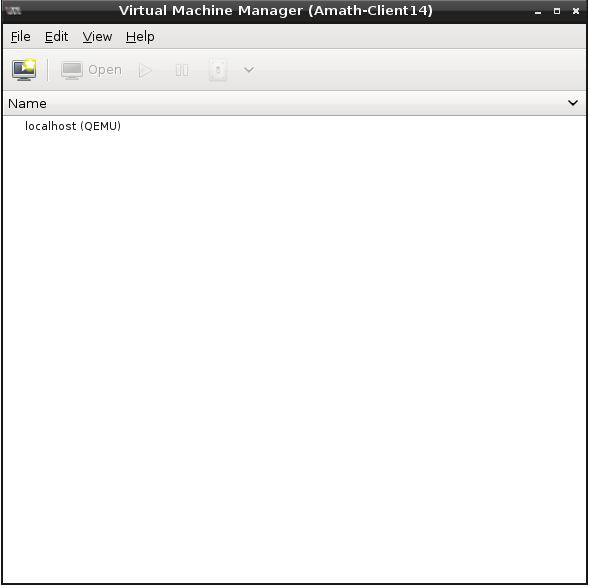

Lab4 Libvirt
實驗描述
Libvirt 是一個實現 Linux 虛擬化技術的 API, 為一種虛擬機器管理工具, 支援多種 hypervisor, 像是 KVM/QEMU, Xen, User Mode Linux, OpenVZ,VirtualBox 等. 不僅有許多針對 Libvirt 開發的應用, 像是使用指令模式運作的 virsh, virt-image, virt-install; 提供圖形化介面功能的 virt-manager, virt-viewer; 透過web應用的 oVirt, AbiCloud 等, 還有 storage 的使用支援 IDE/SCSI/USB 硬碟, FibreChannel, LVM, iSCSI, NFS. 下面我們將呈現使用 virt-manager 來對虛擬機器進行管理.
實驗環境
資訊科學大樓 701 教室
| | Real machines |
|---|
| CPU | AMD Athlon(tm) 64 X2 5600+ |
|---|
| Memory | 1883M |
|---|
| Disk space | 137G |
|---|
| O.S. | Debian squeeze |
|---|
理學大樓 821 機房
| | CSIE-Cloud01 |
|---|
| CPU | 4 AMD Opteron(tm) Processor 6128 processors
(16 cpu cores) |
|---|
| Memory | 8G |
|---|
| Disk space | 500G*2 |
|---|
| O.S. | Debian squeeze |
|---|
| | CSIE-Cloud02 |
|---|
| CPU | 4 AMD Opteron(tm) Processor 6128 processors
(16 cpu cores) |
|---|
| Memory | 8G |
|---|
| Disk space | 500G*2 |
|---|
| O.S. | Debian squeeze |
|---|
安裝實作
- Install Virt-manager
- 新增目錄 virtIMG 用來存放 image 檔
- 在 /src3 底下新增目錄 virtIMG
$ sudo mkdir /src3/virtIMG
- 更改 /src3/virtIMG 目錄為使用者權限
$ sudo chown cloud:cloud /src3/virtIMG
- 變更所在位置到 /src3/virtIMG
$ cd /src3/virtIMG
- 預先準備好一個空的image檔待使用; debsqz[machine no.]_01.img 為 image 檔名稱; 容量大小為 2G
$ qemu-img create debsqz[machine no.]_01.img 2G
- 新增 storage pool
- 開啟 Virt-manager 主視窗 Virtual Machine Manager
$ sudo virt-manager

- 點選 Virtual Machine Manager 視窗的 Edit ---> Host Details 會呈現如下的畫面, 接著選擇 storage 並點選左下角十字按鈕 add pool

- 命名儲存池

- 指定儲存池路徑

- 成功新增儲存池的畫面

- 用 Virt-manager 製作虛擬機器
- connection of host A (server) and host B (node)
- 下載套件 ssh-askpass 作遠端認證用
$ sudo apt-get install ssh-askpass
- 在做 root 遠端認證以前,打開允許 root 遠端登入的權限
$ sudo cp /etc/ssh/sshd_config /etc/ssh/sshd_config.orig
$ sudo nano /etc/ssh/sshd_config
$ diff /etc/ssh/sshd_config /etc/ssh/sshd_config.orig
26c26
< PermitRootLogin yes
---
> PermitRootLogin no
$ sudo /etc/init.d/ssh restart
cloud@Amath-Client14:~$ sudo /etc/init.d/ssh restart
[sudo] password for cloud:
Restarting OpenBSD Secure Shell server: sshd.
- 使用 root 權限產生 key 來做遠端認證
$ su
# ssh-keygen -t rsa -N ""
cloud@Amath-Client14:~$ su
Password:
root@Amath-Client14:/home/cloud# ssh-keygen -t rsa -N ""
Generating public/private rsa key pair.
Enter file in which to save the key (/root/.ssh/id_rsa):
/root/.ssh/id_rsa already exists.
Overwrite (y/n)? y
Your identification has been saved in /root/.ssh/id_rsa.
Your public key has been saved in /root/.ssh/id_rsa.pub.
The key fingerprint is:
ac:be:5f:73:95:97:23:12:79:c0:8e:25:99:4f:c2:24 root@Amath-Client14
The key's randomart image is:
+--[ RSA 2048]----+
| Eo.+. |
| .* +o |
| Oo . |
| . . oo ..|
| S . .oo.|
| . .....|
| . o . |
| . . o |
| oo. |
+-----------------+
root@Amath-Client14:/home/cloud#
# ssh-copy-id -i /root/.ssh/id_rsa.pub root@[node IP]
root@Amath-Client14:/home/cloud# ssh-copy-id -i /root/.ssh/id_rsa.pub root@140.120.8.115
root@140.120.8.115's password:
Now try logging into the machine, with "ssh 'root@140.120.8.115'", and check in:
.ssh/authorized_keys
to make sure we haven't added extra keys that you weren't expecting.
root@Amath-Client14:/home/cloud# exit
exit
cloud@Amath-Client14:~$
- 在 Virtual Machine Manager 主視窗點選 File ---> Add Connection 並設定遠端連線
注意： Hostname 必須填欲監控遠端機器的 IP

- 遠端連線設定成功

- 利用 Virtual Machine Manager 新增遠端機器的虛擬機器並管理
- 如同前述新增虛擬機器般, 差別在於 connection 為遠端機器 IP

- 因為前面已事先新增 storage pool, 因此此步驟做 Browser 時才有遠端機器的 staorage pool 可以選擇

- 與前面相同

- 與前面相同

- 至此已完成遠端機器虛擬機器的新增
- Virtual Machine Manager 遠端監控畫面呈現